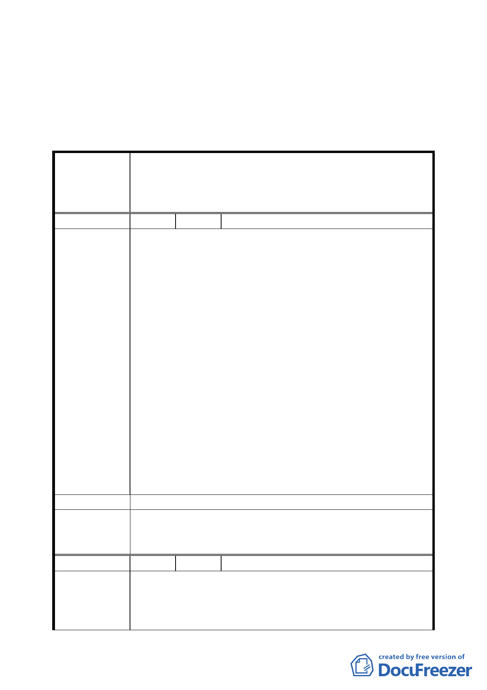

樓建物及 12 樓建物）修正後通過。
二、 公民或團體所提意見審決如後附綜理表。
臺北市都市計畫委員會公民團體陳情意見綜理表
配合臺北市捷運系統新莊線（北市段）大橋國小站變更商業
案
名
區、住宅區、機關用地、道路用地為聯合開發區（捷）主要
計畫案
編 號 １ 陳情人 李耀輝（民權西路 227 號）
一、92 年 9 月～10 月間因捷運工程施工造成本人民權西路
227 號（大同區橋北段二小段 691、692 地號）公司嚴
重沉陷、傾斜經捷運局人員表示無法修復。
二、遂由當時捷運局北區工程處吳沛軫副處長及北工處第九
工務所巫漢忠主任，協助與 CK570C 標及 CK570G 標之承
包商協調依原地原貌拆除重建，並於 92.12.18 雙方簽
訂協議書（詳附件資料）並至公証公司公証，房屋亦已
於 93 年 4 月拆除完畢，捷運施工廠商預計於 94.12.31
陳
情
理
由
將廠房重建完成。
三、期間歷經工廠搬遷、員工異動、訂單流失…等等之不便
及心酸，本人及全體員工已淪為捷運工程之受害者，盼
待多時盼得捷運潛遁機已通過，捷運施工廠商亦依承諾
已開始進行重建工程，貴單位之聯開案豈不硬生生將得
來不易之新居再度摧毀，全體員工再度舟車勞頓往返通
勤，儼然是政府對身為小市民的我們進行二次傷害。
四、懇請 貴單位慎重考慮對本人造成之影響，並於本文鄭
重表示本人不願意加入本次之聯合開發案，懇求還我原
來安居之住所。
建 議 辦 法 有關貴單位延平北路三段以東聯合開發案本戶無參加意願。
本案依捷運局所擬「建議調整用地範圍」（即排除原公展中
委 員 會 決 議 延平北路 3 段西側 7 樓建物、延平北路 3 段東側臨民權西路
4 樓建物及 12 樓建物）修正後通過。
編 號 ２ 陳情人 林瑞勝（民權西路 229 號）
一、92 年 9 月～10 月間因捷運工程施工造成本人民權西路
陳情理由
229 號（大同區橋北段二小段 689、690-1 地號）建物
嚴重沉陷、傾斜經捷運局人員表示無法修復。
二、遂由當時捷運局北區工程處吳沛軫副處長及北工處第九
六